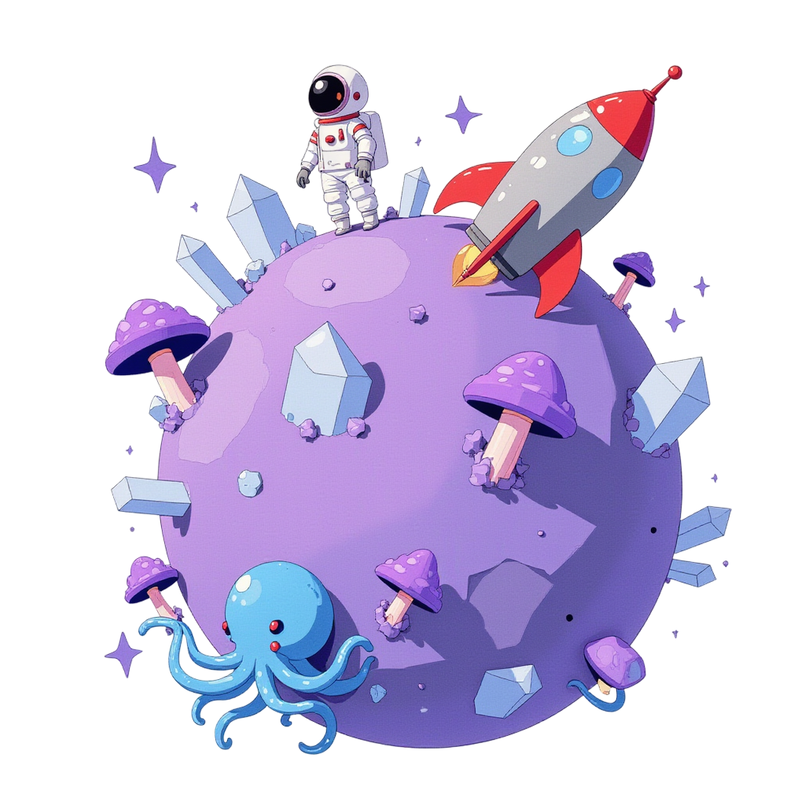
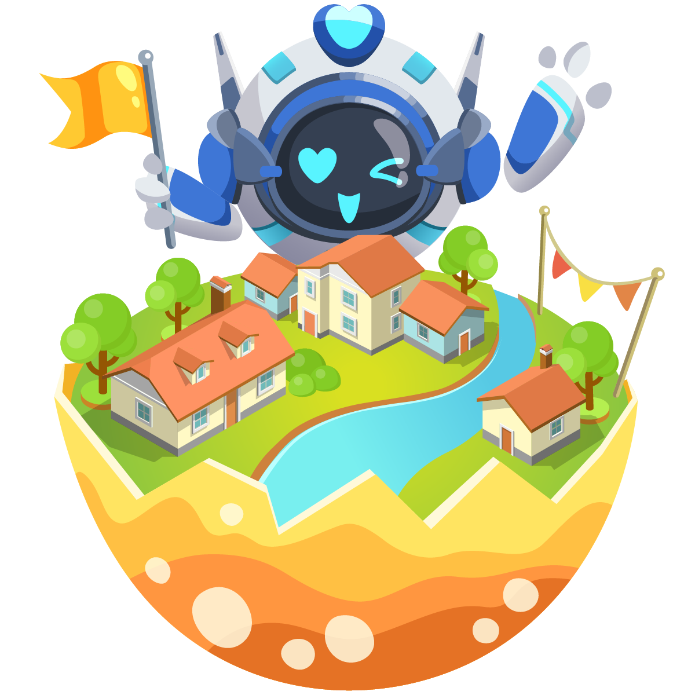
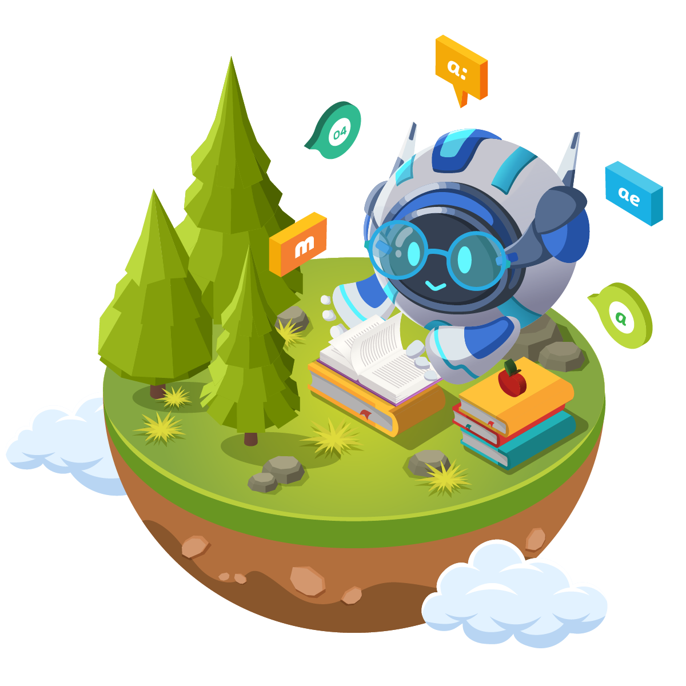
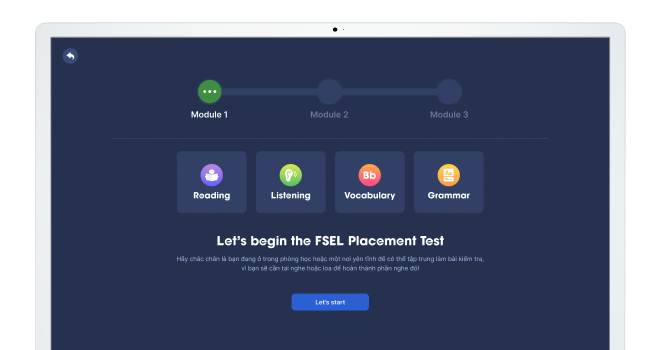
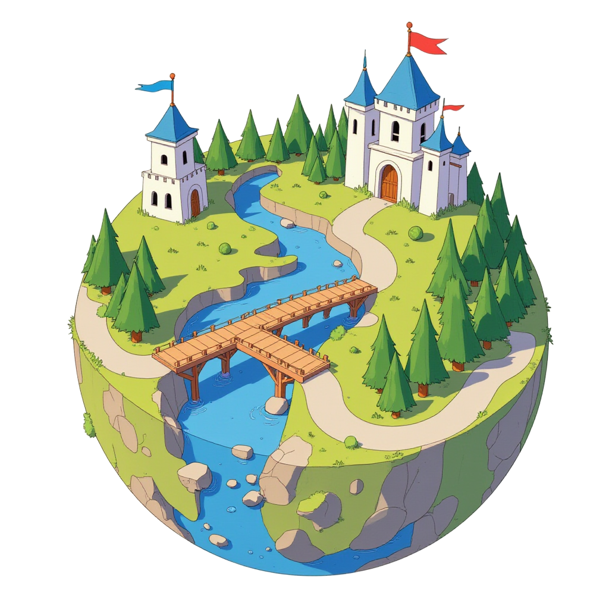

Học ngoại ngữ tương tác cùng AI
Khám phá bài học qua video tương tác, thực hành Nói và Viết trong diễn đàn lớp học, rồi củng cố kiến thức bằng bài tập.
Khám phá cách học

 Một vũ trụ bài học đang chờ bạn khám phá.
Một vũ trụ bài học đang chờ bạn khám phá.Mỗi bài học,
một bước tiến
Xem để hiểu. Thực hành để diễn đạt.
Củng cố để sẵn sàng cho bài học tiếp theo.

Thử một hoạt động học
Chọn một trải nghiệm.
Bắt đầu ngay tại đây.
Video Lesson
Bản trải nghiệm minh họa · Cảnh thiết kế, không âm thanhXem. Trả lời. Khám phá.
Đọc phần giới thiệu “Nice to meet you” và trả lời câu hỏi.
Speaking
Bản trải nghiệm minh họaThực hành câu trả lời của bạn
Đọc đề bài và thử diễn đạt bằng tiếng Anh.
Phản hồi của bài mẫu
Nghe lại chính mình
Bạn đã diễn đạt đủ ý chưa?
Nghe lại câu trả lời, chú ý cách nối ý và những từ bạn muốn nói rõ hơn. Thu lại khi bạn sẵn sàng.
Demo thu âm không chấm điểm hoặc tạo phản hồi AI cho bản ghi của bạn.
Bắt đầu từ
trình độ của bạn
Khám phá năng lực Đọc, Nghe, Từ vựng và Ngữ pháp qua bài đánh giá đầu vào. Tiếp cận lộ trình phù hợp với năng lực và mục tiêu của bạn.
Vào FSEL ↗

FSEL Campus
dành cho nhà trường
Khám phá phiên bản FSEL dành cho trường cao đẳng và đại học.
Khám phá FSEL Campus ↗
Học qua trải nghiệm
“Mình có thể tương tác với các bạn học khác cùng học chung khóa với mình trong Class Forum. Rất thú vị ạ.”
Quang T. — Học viên khóa B1